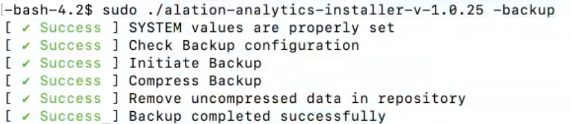
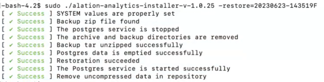
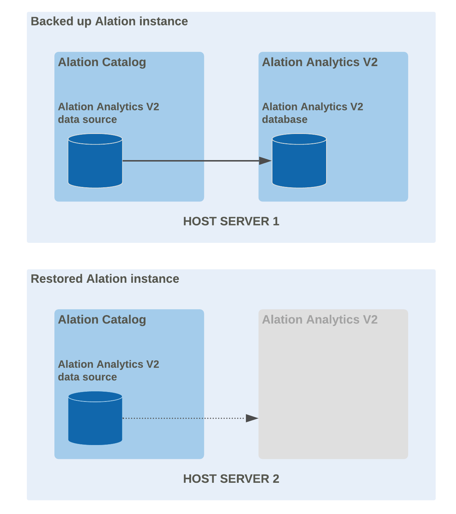
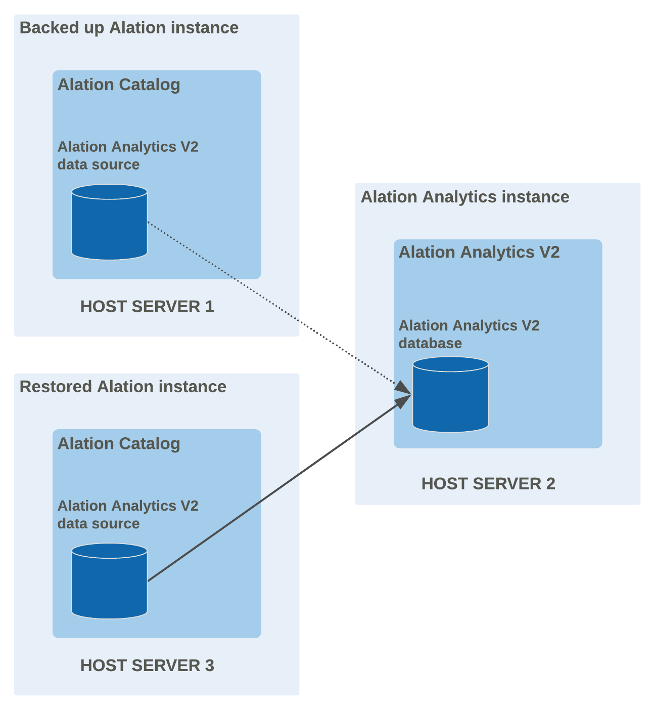

Alation Analytics V2 Backup and Restore¶
Customer Managed Applies to customer-managed instances of Alation
Applies only to customer-managed (on-premise) instances of Alation
At times you may need to restore the Alation Analytics V2 database, for example if it gets corrupted or if Alation Analytics is installed on the same host as Alation and you restore Alation to a new host. Alation Analytics V2 is not backed up by the main Alation application backup process, so its backup process needs to be managed separately. The backup and restore process for Alation Analytics depends on which version of Alation you have:
Starting in release 2023.1.6, Alation Analytics V2 has its own backup and restore functionality. You can create full backups of the Alation Analytics database at any time and restore any of your backups.
Note
This feature is not available for rootless Docker installations of Alation Analytics.
From 2020.3 to 2023.1.5, to restore Alation Analytics V2 data you must first either clear all data from the database or reinstall Alation Analytics, then rerun ETL to repopulate the database. This process can also be used on newer versions if there is no viable backup. See Clear and Repopulate below for details.
Back Up¶
Applies from release 2023.1.6
Backups are created manually on the Alation Analytics host machine. There is currently no option for scheduled or incremental backups.
Backup files can take up a lot of space. Monitor your disk usage and delete backup files manually as needed to free up space.
To back up the Alation Analytics V2 database:
Log into the host where Alation Analytics is installed.
Stop the RabbitMQ container to ensure ETL is not running when the backup begins:
sudo docker-compose stop rabbitmq
If the backup is started while ETL is running, the backup will contain whatever data is present at that moment. This could result in inconsistent data.
Go into the Alation Analytics directory where the installer file is located. For example, assuming the default Alation Analytics directory:
cd /opt/alation-analytics/
Start the backup by providing the
--backupoption to the Alation Analytics installer. For example, to start a backup using version 1.0.25 of the installer, run:sudo ./alation-analytics-installer-v-1.0.25 --backup
As the backup progresses, you’ll see the following output on the screen:
(Optional) You can monitor the backup while it’s still in progress:
Open a new tab or window in your console.
Go into the backup directory, which is inside the Alation Analytics directory at /postgres/13/backup. For example, assuming the default Alation Analytics directory:
cd /opt/alation-analytics/postgres/13/backup
View alation-analytics-backup.log, for example by tailing it:
tail -f alation-analytics-backup.log
When the backup is complete, restart the RabbitMQ container:
sudo docker-compose start rabbitmq
You can find the completed backup file in the backup directory, which is inside the Alation Analytics directory at /postgres/13/backup. Backup files are compressed into a tar file and named using the date and time of the backup, for example 20230623-143519F.tar.gz.
Restore a Backup¶
Applies from release 2023.1.6
You can restore the Alation Analytics database to a prior state using an existing backup file. The database will be reset to the exact state it was in when the backup was taken.
You can also restore a backup file into a new installation of Alation Analytics. In this case, you do not need to click the Initiate Analytics Database button during the installation process. Instead, you can restore a backup file as described below.
Note
The backup file you’re restoring must be from the same version of Alation as it’s being restored to.
To restore the Alation Analytics V2 database from a backup:
Log into the host where Alation Analytics is installed.
Choose the backup file you’re going to restore from, keeping in mind the following:
The backup file you’re restoring from must be from the same version of Alation Analytics as it’s being restored to.
If you’ve moved your backup files, or if you’re restoring to a new installation of Alation Analytics, you’ll need to move the backup file to the /postgres/13/backup directory of the Alation Analytics instance you’re restoring to. It needs to be directly under the /postgres/13/backup directory, not in a subdirectory.
If you’re restoring a specific older backup rather than the latest backup, take note of the backup file’s name. Backup files are named using the date and time of the backup, for example 20230623-143519F.tar.gz.
Stop the RabbitMQ container to ensure ETL is not running when the restoration begins:
sudo docker-compose stop rabbitmq
If ETL is running when you restore, the restoration will be delayed until the ETL process is complete.
Go into the Alation Analytics directory where the installer file is located. For example, assuming the default Alation Analytics directory:
cd /opt/alation-analytics/
Start the restoration by providing the
--restoreoption to the Alation Analytics installer with an appropriate value:To restore the latest backup in the /postgres/13/backup directory, set the
--restoreoption equal tolatest. For example, using version 1.0.25 of the installer:sudo ./alation-analytics-installer-v-1.0.25 --restore=latest
To restore a specific backup in the /postgres/13/backup directory, set the
--restoreoption equal to the backup file’s name without the file extension. For example, using version 1.0.25 of the installer:sudo ./alation-analytics-installer-v-1.0.25 --restore=20230623-143519F
As the restoration progresses, you’ll see the following output on the screen:
Important
If you’re restoring a backup into a new installation of Alation Analytics, do NOT click the Initiate Analytics Database button in Alation.
(Optional) You can monitor the restoration while it’s still in progress:
Open a new tab or window in your console.
Go into the backup directory, which is inside the Alation Analytics directory at /postgres/13/backup. For example, assuming the default Alation Analytics directory:
cd /opt/alation-analytics/postgres/13/backup
View alation-analytics-restore.log, for example by tailing it:
tail -f alation-analytics-restore.log
When the restoration is complete, restart the RabbitMQ container:
sudo docker-compose start rabbitmq
The ETL process will run automatically on its regular schedule to populate the restored database with any data that’s newer than the backup. You can also run ETL manually on demand.
Clear and Repopulate¶
Applies from release 2020.3
If you have no viable backup of the Alation Analytics V2 database, or if you’re on a version from 2020.3 to 2023.1.5, you have the option of clearing and repopulating the database. Compared to the newer backup and restore feature described above, this option has some disadvantages:
Change history data is limited to one year.
Data for search clicks, search queries, and parts of curation history is limited to 30 days.
The process is time consuming as it requires you to rerun ETL.
The steps for clearing and repopulating the database depend on whether Alation Analytics V2 was installed on the same host as Alation or a different host.
Restore a Same-Host Installation¶
Restoring an instance that had Alation Analytics V2 installed on the same host with the Alation catalog
When you restore an Alation backup on a new host, the restored Alation Analytics V2 data source will be orphaned and disconnected after the restore as the underlying Alation Analytics application and the database are not restored. You will need to reinstall the Alation Analytics V2 components on the host where you restored and reconnect the data source and the database.
{kind=link}
To restore Alation Analytics V2 after you have restored Alation from a backup:
Log in to the restored Alation instance and go to Admin Settings > Server Admin > Alation Analytics.
Download the Alation Analytics package, install it on the new Alation host, and perform the required configuration. For the installation steps, refer to Enable and Install Alation Analytics V2.
Note
You do not need to enable the Alation Analytics V2 feature as it has already been enabled on the instance that was backed up and restored.
As part of the installation, you will be asked to initiate the Alation Analytics database on the Alation Analytics settings page by clicking the Initiate Analytics Database button. This will return the Alation Analytics data source to the working state and begin the ETL process that will repopulate it on the restored instance.
Restore a Remote-Host Installation¶
Restoring an instance that had Alation Analytics V2 installed on a separate host
With Alation Analytics installed on a remote host, the Alation Analytics V2 components will remain available on the remote host even if the main instance becomes unavailable. After you restore the main instance, you will need to reconnect the Alation Analytics data source on the restored instance and the Alation Analytics database on the remote host and repopulate the data in the database. You do not need to reinstall the Alation Analytics components from scratch.
{kind=link}
To reconnect the Alation Analytics V2 data source after you have restored Alation from a backup:
SSH to the Alation Analytics V2 host and go to the Alation Analytics V2 installation directory.
Whitelist the IP of the new Alation host on the Alation Analytics V2 host by running the installer with the
-iflag. Detailed instructions about whitelisting are available in the Alation Analytics V2 README file that can be found in the Alation Analytics V2 installation directory.Log in to the restored instance of the Alation catalog.
Go to Admin Settings > Alation Analytics and locate the section Clear Data. We recommend reloading the Alation Analytics database after restoring the catalog from a backup to avoid any mismatch that may exist between the backup data and the actual data found in the remote Alation Analytics database.
Click the Clear Data button. This action reconnects the restored Alation catalog and the remote Alation Analytics application and clears all data from the Alation Analytics database. After this action, the Alation Analytics V2 ETL process will reload the database from scratch. The ETL does not start immediately after this action and will be performed based on the current ETL schedule.
To additionally validate the connection between the Alation Analytics data source after the restore and the remote Alation Analytics V2 database, open the settings page of the Alation Analytics V2 data source. Then under Test Connection, click Test to confirm connectivity to the database.